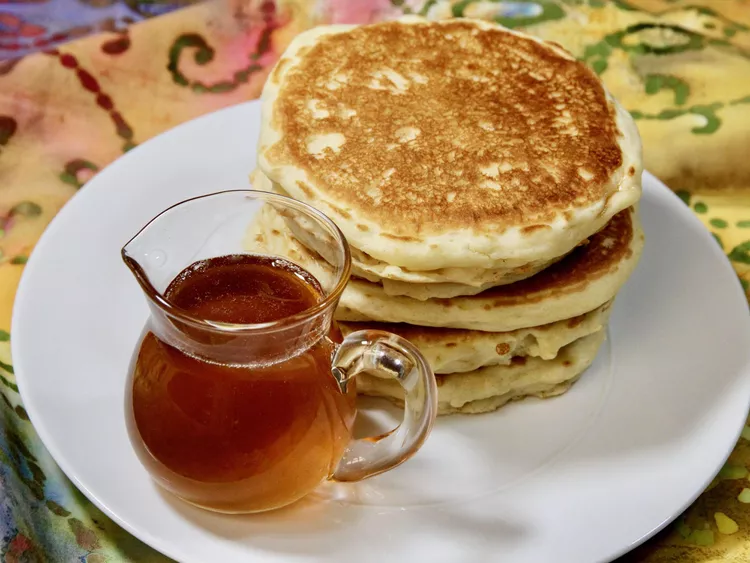

PANCAKE

Description
This was the DIY pancake syrup I grew up with.
It tastes fabulous without all the extra work
of getting real tapped maple syrup. It's also
a cheaper way to have syrup, as these are things
I always have in my cupboard.
Ingredients:
- 2 cups white sugar
- ½ cup brown sugar
- 1 cup water
- ½ teaspoon maple flavored extract
- 1 teaspoon vanilla extract
Steps:
- In a saucepan, combine white sugar, brown sugar, and water. Bring to a boil, and cook for about 3 minutes.
- Stir in maple extract and vanilla, and remove form the heat. Let cool.
- Serve at room temperature. Store in a sealed container in the refrigerator. (It may crystallize a little if the container is not completely airtight.)
Home